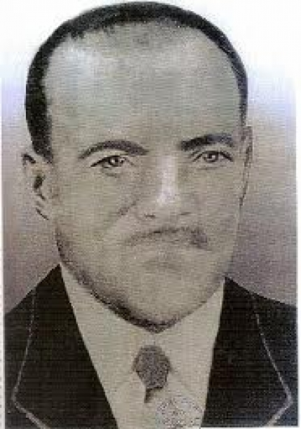

MASSANGANGA DE CARIOLÉ
Manuel Rufino de Souza, Rufino do Beiru ou Rufino Bom do Pó era um famoso babalorixá do Candomblé de Salvador, Bahia. Tinha seu terreiro no bairro do Beiru que mudou de nome para Tancredo Neves. O nome Beiru, de origem iorubá, refere-se ao escravo africano Gbeiru que morou na localidade no século XIX
O Pó a que se refere o título também chamado de Zorra era preparado com raízes, folhas, e muitos ingredientes próprios para feitiço, a receita só era conhecida pelos mais velhos, não ensinavam para ninguém, muitos babalorixás ficaram famosos por serem Bom no Pó ou Bom de Pó. Manoel Rufino era filho de santo de Miguel Arcanjo de Xangô que era da nação (Angola Tapuiá - extinta por falta de anotações dos antigos, passando para Angola Musucongo ou Angola Muxigongo), Massanganga de Indú Duxó. Manuel Rufino de Souza, foi o fundador do Asé do Beiru, Ile Asé Tomin Bocun; sua digina era Omin da Samba e, o nome de sua Osún era Oyá Omigilange que, era o nome de Osún Opará. Ele escondia sua idade mas, acreditamos ter mais de 85 anos quando veio a falecer em 1973[carece de fontes], por complicações de Diabettes Mellitus, tendo inclusive sofrido amputações. Primeiro, do dedo do pé direito, em seguida, do pé esquerdo, finalmente, da perna. Deixou 5 filhos carnais, sendo 2 homens - Roque e Antônio -, e 3 mulheres; entretanto, deixou vários filhos de santo dentre eles: Lídio da Boa Viagem(BA), Walter ti Oxossí(RJ e tantos outros que, respeitosamente, preservam seus ensinamentos diz Guaranho do Bara.
Outra versão Manuel Rufino de souza dijina Urudasamba uroko Yaminkilanje inciado no candonblé (angola de caboclo) por um homen chamado Miguel Arcanjo também conhecido como Massaganga de Cariolé do Santo amuraxó dizem que morreu com mais de 80 anos de idade faleceu no ano de 1983 sua fama era de um homen temido por seu poder no feitiço ou no Pó como era conhecido Rufino Bom no Pó, sua Casa de santo (Ilé axe tomin bokun) que possuia uma imensa extensão de terra que hoje e um grande bairro chamado Tancredo Neves a rua onde era seu terreiro hoje possui seu nome Rua Manuel rufino e dirigida hoje em dia por seu filho carnal Manuel Rufino que zela pelo santo de seu pai, Esta é a unica imagem que se tem de seu Rufino do Beiru (Rufino do Beru(ominquilangi).jpg)
Notícia publicada no Jornal do Beiru Publicada no primeiro número do jornal, lançado em novembro de 2002
A história do Beiru se confunde com a história dos cultos afro, terreiros e, principalmente, com a história do seu primeiro morador – Miguel Arcanjo. Beiru foi um negro escrevizado, comprado pela família Hélio Silva Garcia. Ele herdou as terras antes pertencentes aos seus donos, hoje equivalente a área ocupada pelo Beiru, que gira em torno de 1 milhão de metros quadrados de área.
Essas terras, após a morte de Beiru, voltaram à posse da mesma família de origem, já que “Preto Beiru” como era chamado, não tinha herdeiros libertos. Os Hélio Silva Garcia, em gratidão a Beiru, resolveram homenagear-lhe dando o nome Beiru à sua fazenda, como consta na escritura da fazenda datada do final do século XIX. As terras foram então vendidas a Miguel Arcanjo, primeiro residente da área. Anos mais tarde ele viria a fundar um terreiro de candomblé no local onde situava-se a casa grande da Fazenda Beiru. A venda das terras datam de 1910. Foi assim que nasceu em 1912 a Nação de Amburaxó, na área conhecida como Jaqueira da Cebolinha, que atualmente dá nome ao Largo do Anjo-mau. A Nação de Amburaxó, fundada por Miguel Arcanjo, que também era o pai-de-santo, se diferia dos demais terreiros por ter uma doutrina mais aberta. “Era mais fácil de aprender”, diz o filho-de-santo Eldon Araújo Laje, conhecido como Jijio, do Terreiro Insumbo Meian (Vila São Roque), localizado no Largo do Anjo-mau. Essa Nação se diferenciava das demais, como a Nação de Angola, a Nação Quêto, da Nação Jêji e da Nação Banto, entre outras coisas porque todos os seus cultos eram realizados do lado de fora, aos pés das árvores sagradas, que até hoje existem no espaço que circunda o posto médico e a 11a. Delegacia.
É dessa linha do candomblé que Miguel Arcanjo vai formar seus discípulos e que mais tarde disputarão as terras do bairro: Miguel Rufino, Olga Santos (morena) e Pedro “duas cabeças” que criaram seus terreiros independentes.
Depois de formados seus discípulos, já sabedores da Doutrina amburaxó – pouco difundida, Miguel arcanjo Morre, em 1941, aos 81 anos de idade, vítima de um câncer de próstata. A sua morte se deu na casa de seus filhos-de-santo Cazuza e Morena. Deixou como Herdeiras legítimas de suas terras, Caetana Angélica de Souza e Guilhermina Angélica de Souza. Como herdeiro do cargo de pai-de-santo ficou o seu filho-de-santo Manoel Jacinto.
Um pouco antes de falecer, Miguel Arcanjo adquiriu alguns pedaços de terra, entre esses ao Senhor José Evangelista de Souza (seu Cazuza). Esta área ia até o atual fim de linha do Tancredo Neves. Seu Cazuza se casaria, posteriormente, com uma irmã-de-santo Olga Santos (Morena). Após a morte de “Seu Cazuza”, seus filhos tentaram impedir que se cumprisse uma promessa feita por ele a Obaluaiê, que certa feita o salvou de uma picada de cobra e também era o guia de Morena. Na área prometida ao santo para a fundação do seu terreiro. Foi neste espaço que morena, agora mãe de santo, fundou o terreiro Insumbo Meian (encontro de Obaluaiê com as águas doces) na Baixa do Cabula, hoje situado, próximo ao Largo do Anjo-mau, cujo filho-de-santo Eldon, responsável por uma pesquisa para formação de um acervo com a história do Bairro, revitaliza a cultura negra. Após a morte de Mãe-Morena, o cargo passou para Nair Oliveira de Souza (Oju Oyá), filha de seu Cazuza, e logo depois foi empossada Jacira Oliveira de Souza Brito (Yatomin), primeira mãe-de-santo eleita como a sua sucessora ainda em vida, lançando um processo de escolha totalmente novo e mais democrático, evitando disputas.
Entre os anos de 1938 e 1944, Miguel Arcanjo de Souza moveu uma ação de despejo contra Manoel Cyriaco, que não vinha pagando seus honorários das terras arrendadas. O caso só foi resolvido anos mais tarde com a expedição de mandato de reintegração de posse das terras. Após tantas disputas, em 1979, o então governador do Estado da Bahia, Antônio Carlos Magalhães resolveu desapropriar todos os herdeiros das terras do Beiru, tirando a posse de todas as terras em detrimento da instalação de um projeto de urbanização da área. Foram entregues, simbolicamente, cerca de 600 títulos de doação de terreno referentes ao projeto, o que mereceu a manchete “Moradores do Beiru receberam terrenos em clima de festa”, veiculado no Correio da Bahiam em 18 de Dezembro de 1980. Cerca de seis anos depois o então Governador da Bahia, João Durval, implantou o projeto que beneficiaria cerca de 80 mil moradores o projeto Beiru, que visava a urbanização, viabilizando a melhoria das moradias, do acesso, infra-estrutura, saneamento, o que daria ao Tancredo Neves sua atual configuração.
Quem foi Preto Beiru?
Para alguns era um feitor encarregado de zelar pelas terras de uma fazenda onde eram as nossas casas, impedindo que aqueles mais pobres fizessem suas rocinhas ou casinhas. Dizem também que é nome feio em nagô. O tempo se encarregou de apagar da memória da comunidade o porque ter o nome de beiru.[1]
Mas o fato é que hoje o bairro, representado pelo nome de um ex-presidente, diga-se de passagem branco, ainda sofre.. Atualmente o Tancredo Neves conta com uma população de cerca de 180 mil habitantes, e já tem um desmembramento muito famoso, que é o Arenoso. Hoje conta com um comercio próprio, rede transporte, pavimentação, serviço de esgotamento, delegacias, linhas de ônibus.
Mas nem sempre foi assim. Demorou-se muito para que o bairro ganhasse sua atual configuração e processo de urbanização. Depois de muita luta é que foram feitas algumas melhorias, inclusive acabando com patrimônios que poderiam ter validade como patrimônio histórico, e oferecer recursos para estudos dos atuais moradores, como aconteceu com O terreiro de Miguel Arcanjo, que foi completamente destruído, excetuando-se as árvores sagradas dos cultos amburaxós, para a construção de um posto médico no local. Matéria veiculada pela Tribuna da Bahia em 29.05.85 Fontes consultadas para a materia: A Tarde - Correio da Bahia - GAP – Grupo Alerta Pernambués – Carta Aberta à Comunidade Religiosa. Salvador, 02.10.2001. Tribuna da Bahia Carta Aberta a Comunidade Religiosa, 02.10.2001, GAP – Grupo Alerta Pernambués ACERVOS – Arquivo HIstórico Municipal do Salvador: Jornais Miguel Arcanjo de Souza - Autuação N.1041 – 1938-1944. Livro 1. Acervo. Jornal A Tarde: 08.02.1985; 03.02,2001 – Jornal Tribuna da Bahia: 29.04.1985 – Jornal *Correio da Bahia: 18.12.1980; 01.09.1986; 17.10.1986; 10.01.1987 A Tarde, 08/10/2001 Correio da Bahia, 08/10/2001 Fundação Gregório de Mattos VOCÊ CONHECE A MINHA HISTÓRIA? Eu gostaria de me apresentar, para tomar-me conhecido de todos. Chamo-me Beiru. Vocês sabiam que eu morei aqui? Faz muito tempo, lá pelos anos de 1820. Fui seqüestrado na minha terra natal sem direito a escolha. Depois de um tempo fui comprado por um membro da família dos Garcia D´Ávila e trazido para a fazenda Campo Seco. Aqui eu trabalhei muito e procurei ganhar a confiança dos meus "donos" e com o passar do tempo eu pude até ganhar terras deles, terras estas que possibilitou me juntar com meus irmãos de África. Eu fui um homem bom, tão bom que deixei saudades em todos aqueles que viveram junto a mim (irmãos e colonizadores), ao ponto de trocarem o nome da fazenda a qual eu vivia (Campo Seco), colocando o meu nome BEIRU. Ah! Como fiquei grato em ver o meu nome sendo lembrado por todos.
Agora vejam só vocês, andam dizendo que eu fui um capataz, que eu açoitava os meus próprios irmãos, dizem até que o meu nome é feio; vê se pode uma coisa desta? Agora que eu não posso mais me defender falam isso de mim; tiraram meu nome do bairro. Que estupidez fizeram com a historia; mas sempre foi assim com os negros, todas as vezes que homenageiam um negro, desfaz-se a homenagem; é assim com ruas, monumentos, escolas etc. mas desta vez estou amparado com a sanção da Lei 10.639, que obriga a inclusão de disciplinas de Historia e Cultura Africana e Afro-brasileira nos currículos escolares. As terras que foram minhas e que tinham meu nome, voltam a serem chamadas com o nome de origem BEIRU. Fico muito grato por meu nome se tomar perpétuo nas mentes de todo aqueles que venham tomar conhecimento da minha verdadeira história, como diz Marcus Garvey "Um homem sem história é como uma árvore sem raiz".
Texto fornecido pelo Bábálorisá José Augusto Ti Sangó Elufiran. Neto de Massanga de Cariolé e filho de Oxuguemin (dona rosinha) filha de Rufino, também conhecido como Rufino Bom no pó ou Rufino do Beiru.
FONTE WIKIPEDIA
Copyright © 2011- Todos direitos reservados à ACCAIA
Rua Arildo Jose da Silva,99 - Itinga Joinville - SC - Cep: 89245000
::: Suporte 04791261971 :::
Editor on line